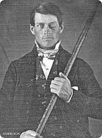
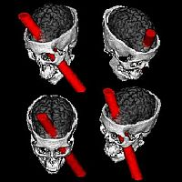

Cooperación y competencia; estas dos palabras representan las fuerzas primarias que han moldeado el surgimiento de las sociedades en las que vivimos. Es una estampa entre los animales distribuida de acuerdo a su estructura cerebral y el medio en el que evolucionan; son rasgos arraigados a los gigantescos impulsos de sobrevivir y reproducirnos; rasgos que, como vemos, una especie como la nuestra es capaz de transformar.
La plasticidad del cerebro y la información recogida por el medio nos están proveyendo con formas de permutar la biología, buscar la manera de que funcione mejor para nosotros y de que no estemos inútilmente a su servicio. La ciencia ha cambiado la manera en que interactuamos con el mundo, estamos protegidos contra virus desde meses después de nacer y una de las primeras palabras que la madre aprende al tener un hijo es ‘amoxicilina’. Somos una especie estupenda, curiosa y joven; pero con mucho potencial. Tanto para abatirnos contra nosotros mismos, como para avanzar y alcanzar bienestar para todos.
Dentro de este mundo humano que observamos hoy, existe una fascinación arraigada a la violencia; un universo completo manipulado bajo este fascinante fenómeno. La gente se pelea por todo; como la mayoría de animales en el planeta, los individuos defendemos nuestro territorio y descendencia con dientes y garras. Además, a través de la historia hemos dividido cada rama de la conducta humana y la hemos diferenciado de la nuestra basados en datos indeliberados e involuntarios como las razas, las nacionalidades, las identidades sexuales, y otras veces aprendidos como las religiones y los partidos políticos; debatimos hasta sobre nuestro gusto en música y zapatos. El ser humano anda equipado para defender lo suyo y ‘pararse en dos patas’ a pelear. Aparentemente, no hemos tenido guía divina que nos ayude en estos menesteres. Criada y mantenida en un espacio cristiano, mi experiencia me dice que todo lo contrario.

Los biólogos evolutivos estudian los orígenes humanos desde esas dos inequívocas fuentes que nos hacen: la biología y el medio. Como decíamos antes, todo está dividido, sin embargo, cuando la competencia ocurre en un escenario de cooperación, las cosas suelen avanzar. Los equipos que pierden tienden a ser lo suficientemente adultos para aceptar el hecho y continuar; desafortunadamente, no siempre vivimos dentro de la madurez y en muchas ocasiones parece todo lo opuesto. Tenemos que asimilar la idea de que existen comportamientos que están anclados en adaptaciones biológicas y otros que no. Dentro de la biología evolutiva se han observado comportamientos interesantes que explican el origen de algunas de nuestras conductas. Uno de ellos, por ejemplo, tiene que ver con el deseo sexual femenino y cómo aumenta en los días de la ovulación. Distintos estudios que involucran el hecho han sido diseñados sobre esta premisa y han confirmado esta relación directa del nivel hormonal, incrementando el deseo de una función clave en el objetivo de la especie: copiar y producir más genomas. De la misma forma, la testosterona tiene sus funciones y las ejerce sobre el individuo. El sexo y la agresión forman parte de la lista.
Sin embargo, otros estudios nos enseñan que no todo cabe dentro de la biología ni se pueden explicar conductas a través de adaptaciones. De hecho, la biología evolutiva nos enseña hoy que el cerebro humano es sumamente plástico y viene dotado con ciertos potenciales que pueden ser explotados o inhibidos a través de la experiencia y las ocurrencias ambientales.

Efectivamente, tenemos evidencias varias sobre cómo los neurocircuitos se van entrenando a través del tiempo con la experiencia, mientras más son usados, más se especializan. Además, se ha observado que ciertos tipos de evolución no toman tanto tiempo y que, ciertamente, aunque aún poseemos rasgos primitivos debido a nuestra joven situación, no somos simios vestidos y es posible estar más aventajados si aprendemos a reprimir la violencia, entre otras cosas.
Pero como toda conducta humana, esos fenómenos que evolucionan para darte beneficio pueden contribuir también para dañar a los demás; muchas veces te dañan a ti también y es preciso sacarle provecho a esa interacción constante e importante entre la biología y el medio. Una interacción que nos origina, tanto en lo positivo como en lo negativo, pero que, a su vez, nos ofrece disfrutar parte activa en ello.
Veamos el caso investigado por el criminólogo Kevin M. Beaver, de la Universidad del Estado de Florida, quien partió de la recolección de genomas en un programa estadounidense llamado “Add Health” (Agrega salud), un proyecto actual administrado por la Universidad de Carolina del Norte en Chapel-Hill y fundado por el Instituto Nacional de Salud Infantil y Desarrollo Humano. El programa comenzó en 1994 y desde entonces, más de 3,000 adolescentes han sido entrevistados y sus genomas decodificados.
Beaver, junto a sus colegas John Paul Wright, de la Universidad de Cincinnati y Matt DeLisi, sociólogo de la Universidad del estado de Iowa, buscaron una correlación entre la vida social de los adolescentes analizados y algún indicativo genético que los conformara a todos en un solo grupo. Los resultados de sus análisis han sido publicados por el diario Psicología Genética.
La investigación criminológica ya hace mucho que había relacionado el uso de drogas, la personalidad antisocial y la conducta criminal con la formación de grupos de delincuentes, pero esta es la primera vez que un estudio descubre otros lazo entre estos amigos y esta vez biológico: una mutación genética de un alelo es compartida por estos grupos de bandoleros. Pero el asunto no sólo queda en la genética. No debemos olvidar que por encima de todo, los humanos somos animales sociales y el medio ambiente traza caminos imborrables en la formación de nuestra personalidad y estabilidad mental. No todos los chicos con esa mutación son bandoleros.
“Descubrimos un dato curioso aunque no sorprendente. Algunos muchachos poseían el alelo pero no mostraron nunca el comportamiento delincuente ni se interesaron en formar pandillas o unirse a ellas. Estos muchachos fueron salvados por el amor materno”, expresó DeLisi.
Este conocimiento es sumamente importante pues la atención y al amor de la madre es capaz de silenciar la mutación. Esta es, efectivamente, la relación entre ambiente y biología que observamos; por ello, muchos educadores se preocupan de que conocer tus potenciales en una lectura del genoma podría predisponer a muchos a elegir caminos inusuales, distintos a los que hubiesen tomado sin la información. Sin embargo, para otros investigadores, el conocimiento te ofrece poder; el reto está en educar para que toda la población, o por lo menos la mayoría, elija hacer lo correcto con el conocimiento que adquiera. Con casi siete mil millones de personas en el planeta, la solución parece imposible de conseguir.
Y es viable eso de venir programados para un sinnúmero de cosas y encontrarnos con un ambiente que las promueva, las silencie como innecesarias o las potencie. La neuropsicología todavía anda en pañales en cuanto a la conducta humana, pero el bebé, por lo menos, ya puede pararse y dar sus primeros pasos. Recientemente, por ejemplo, hemos leído estudios donde se ha confirmado el aumento en la velocidad del procesamiento neuronal en el cerebro adolescente en comparación con el cerebro del niño. Este cambio tan importante es parte de todo el proceso biológico que nos va convirtiendo en adultos y nos regala las fases apropiadas para arrojar la información necesaria hacia la nueva generación. Uno de los grandes retos es controlar que el crecimiento de emociones como la rabia no llegue al punto de hacer daño, muchas veces irreparable.
Por otro lado, la biología se encarga de ofrecernos individuos con problemas neurológicos severos cuyos rasgos son caracterizados por la violencia, muchas veces bruta. Los psicópatas, sociópatas y personas que han atravesado por inusuales traumas son manipulados por un tipo de emoción en específico de acuerdo a los daños neuronales. Es el famoso caso de Phineas Gage, el constructor de 25 años que en 1848 experimentó un terrible trauma cerebral cuando una vara de 14 libras de acero le hizo un agujero en el cerebro, el pedazo de varilla le entró por la mejilla y salió por encima de la cabeza. Pero Phineas no perdió el conocimiento, decía no sentir dolor y continuaba vivo; sin embargo, la inusual herida cerebral había hecho su daño, todo el que conocía a Phineas aseguraba que no era el mismo hombre después del accidente. Gage se tornó agresivo, impaciente, cruel, obstinado, irreverente. Perdió su trabajo no por falta de habilidad cognitiva o física sino porque su personalidad había cambiado y nadie confiaba ya en él. Unos once años después del accidente, Gage tuvo ataques epilépticos y luego murió sin que nadie se ocupara de su cerebro. Sin embargo, es uno de esos casos clínicos neurológicos que hacen evidente el control que tiene el cerebro y el ADN en nuestras células sobre la forma en que nos comportamos y nuestra personalidad.
“Ciertamente, la investigación neurobiológica sobre conducta violenta psicopática sugiere que existe un enlace directo entre la enzima, monoamino oxidasa A (MAOA), y la violencia. Un estudio realizado por H.G. Bruner asoció la agresión en varones con una mutación en el gen que codifica la enzima, cuya importante función, precisamente, es metabolizar químicos cerebrales como la serotonina, la dopamina y la norepinefrina. En otros estudios, ratas deficientes en MAOA mostraban reacciones de miedo exageradas y señales de agresión tan intensas que se atacaban entre ellas”, escribe Jennifer Sabo, neurobióloga de la Universidad de Pennsylvania.
Los descontroles en la producción de serotonina, expresados en mutaciones genéticas, apuntan a problemas de agresión y violencia, especialmente si son notables en lugares como la corteza frontal orbital, que está encargada de controlar reacciones impulsivas, es decir, es la que nos permite no convertirnos en el ‘Doctor Merengue’; también la corteza cingulada anterior que se encarga de reclutar a otras regiones para que intervengan cuando el conflicto es creado, y la pequeña amígdala cuya encomienda es producir una respuesta de miedo y otras emociones negativas. El cerebro viene listo para sobrevivir, pero también para aprender cómo y en qué tipo de sociedad y cultura. Mamá puede enseñarnos todo eso y brindarnos amor y seguridad sin traumatizarnos.
Y cuando hablo de mamá me refiero a la persona encargada de criar al pequeño hacia el futuro; no importa quien sea. El medio nos provee con ese poder; un poder que puede, como siempre, ser usado para desarrollar conductas que no están potenciadas en nuestra biología o para silenciar esas que están. Somos nosotros, como seres humanos, los que necesitamos actuar de forma tal, que nuestras reacciones mejoren a toda la especie. Si el niño tiene establecida una estructura cerebral regular, no importa si una mutación puede hacerlo violento, no importa si crees o no crees que Satanás o Freud tienen algo que ver en la creación de la agresión o si funciones adaptables en el pleistoceno todavía manipulan a la especie; lo importante es que decidas educar con amor, educación y honestidad y permitas que se desarrollen drogas eficaces y eficientes para arreglar a los que no pueden manipular su biología.
No permitas que las brujas vivan… (Éxodo 22:18)
¿Por qué sobrevive la cruel lapidación?
En su libro El caso a favor de la fe, Lee Strobel entrevista al doctor John Woodbriged sobre el lazo de la Biblia con respecto a la violencia. Los creyentes intentan excusar a los cristianos de las maldades que ocurren en el mundo y nos aseguran que si retirásemos al Espíritu Santo del planeta las cosas fueran mucho peor. ¿Tiene influencia este espíritu en el mundo? Woodbridge responde con otra pregunta: “¿Puedes imaginarte lo que sería el mundo si retiraran al Espíritu Santo?, sería entonces cuando el horrible lado de la vida emergería aún más gráficamente de lo que observamos hoy”.
Al parecer, este espíritu está capacitado para ejercer un tipo de poder frente a la maldad en el mundo ya que es capaz de inhibirla y no permitir que haga las cosas peores de lo que ya son. Sin embargo, el espíritu está limitado y no puede inhibir la maldad completamente; su poder no está al nivel del poder de Satanás…
Como a muchas otras personas, la violencia en la Biblia tiene el mismo sentido para mí que los muñequitos del Coyote y el Correcaminos: ninguno.
En primer lugar, y allí deberíamos detenernos, si los dioses actuales existieran, no debería de existir la violencia. Y si los dioses están luchando contra los demonios por un mejor mundo, debería de ser más evidente. De hecho, deberían darnos las claves para ayudarlos; pero no lo hacen. Tristemente, los libros sagrados que rigen gran parte del mundo hoy, están repletos de actos de violencia sin sentido. Los rasgos que los caracterizan son de envidia, infidelidad, celos, asesinatos, esclavitud, abuso, injusticias y consejos bastante alejados de los derechos que hoy nos protegen. Corin Tellado se aproxima más.
Que los dioses no sepan ni hayan sabido cómo lidiar con la violencia humana es realmente decepcionante; hasta que te das cuenta de que no existen, por supuesto, y comienzas a estudiar la evolución. Los libros sagrados no pueden haber sido escritos por nada sobrenatural ya que no hay nada mágico en ellos, por el contrario, promueven comportamientos que son crueles y horrorosos en cualquier época y que cualquier dios de segunda mano debería de saber identificar y erradicar.

Como humanos sabemos cuáles son las acciones que pueden beneficiarnos, conocemos el trabajo en equipo y sus beneficios, sin embargo, nos han enseñado a seguir escritos que van en contra de esa moral que solemos defender. Los cristianos concuerdan contigo en que la inquisición y la quema de las brujas fueron terribles episodios de su pasado que no debieron ocurrir, no obstante, y como bien lo señala Paul Doland de la Web Secular, la Biblia condona la quema de brujas y de espiritistas, de hecho, promueve que sean asesinados a pedradas. Tristemente, algunos miembros de la especie Homo sapiens aún recurren a este horrendo acto por las cosas más nimias, muchas de ellas escritas en sus libros sagrados y basadas en las diferencias con otras personas; siempre hay un género, una raza o una nacionalidad inferior. Por lo tanto, si crees en la telekinesis, ni se te ocurra intentar alzar mi mano.
¿Y cómo puede salir de la experiencia de una bondadosa deidad el acto de apedrear hasta la muerte a otros porque son distintos, porque piensan distinto, porque adoran distinto? Y aún estos actos hayan sido elaborados para una población hace siglos, ¿lo hace menos cruel o más razonable esta acción? ¿No debería una generosa deidad conocer la diferencia no importa el tiempo que pase?, ¿no debería de conocer bien los rasgos de la especie y proponer derechos para el bienestar de todos? Los libros sagrados tendrían que ser positivos y con enseñanzas que superen las alcanzadas por los humanos; no tendríamos que andar detrás del rápido neutrino gastando miles de millones en errores para conocer su velocidad, los dioses debieron decírnosla.
Para mí, las enseñanzas socavadas de un libro sagrado son inútiles. Aún las personas lo interpreten de otra forma, ¿cómo justificar que esas atrocidades estén escritas allí?, ¿cómo justificar este enorme lapso mental de la deidad en cuestión?, ¿no debería de estar mejor informada?
Pero ningún dios existe. Individuos varios a través de la historia han utilizado el desconocimiento, la violencia y la muerte como pilares vitales que controlen la cooperación y la competencia entre los hombres y mujeres del mundo. Manipular a los demás para tener poder y dinero, lo que se traduce en mayor comodidad y en más opciones en el placer y el sexo; eso sigue siendo clave. Pero la humanidad es vasta y hemos crecido, cada vez tenemos más información y formas de establecer nuevas ideas; a lo mejor, en un futuro, no necesitemos adorar a Sarah Connor para que proteja la nueva generación; la misma especie se encargará de ello.
Volver al índice de la Lupa Herética
© 2008-2024 Glenys Álvarez y Sin Dioses. Prohibida la reproducción con fines comerciales.
Comentarios
Comments powered by Disqus